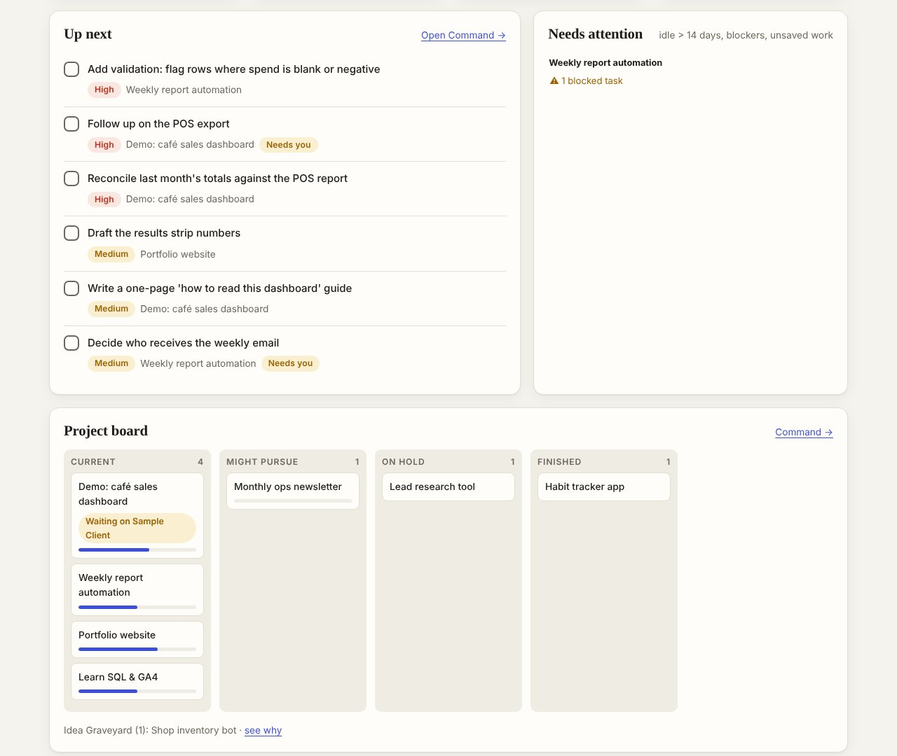

The problem
Too many projects, no single view
With several projects running at once — job search, side ventures, client-style work — the status of each one lived in a different chat, folder or note. Every morning started with re-reading everything to work out where things stood.
I wanted one screen that tells me the state of everything, and one clear next step, before I open anything else.
How it works
Status first, details on demand
- Today's brief: a short written summary at 9am — what to tackle next, reminders, what's waiting on me, what to keep an eye on.
- Key numbers: current projects, open tasks, high-priority items and anything that needs attention (idle for 14+ days, blocked, or unsaved).
- Up next: the top tasks across every project, sorted by priority, with "Needs you" flags for decisions only I can make.
- Project board: every project sorted into Current, Might pursue, On hold, Finished and an "Idea Graveyard", each with a progress bar from its milestones.
- Waiting on: who each project is waiting for, and the follow-up date — which becomes a reminder a week ahead.


Design choices
Built to be trusted, not just looked at
Private by default
Runs on my own PC. Real projects and tasks stay in a local folder that's never uploaded; only the empty scaffolding is on GitHub.
Safe saving
The local server can only write two files (tasks and profile), checks where each request comes from, and refuses everything else.
Hands-off upkeep
A background helper restarts the dashboard if it stops and refreshes the project handover every 10 minutes.
Two takes
Same brief, two AI build teams
I gave a similar brief to two AI tools and kept both. The Claude build became this command centre: live status and next steps. The ChatGPT build became Daybook, a record keeper for documentation, handovers and files. Comparing them taught me where each tool is strong — and how to write a brief that gets the result you actually need.